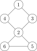
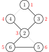
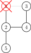
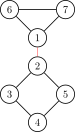

OI Wiki · prijevod · Teorija grafovaOI Wiki · translation · Graph theory
Artikulacijski vrhovi i mostoviCut vertices and bridges
Sadržaj
Srodno štivo: Dvostruko povezane komponente
Strože definicije artikulacijskih vrhova i mostova vidi u Osnovni pojmovi teorije grafova.
Artikulacijski vrhovi
Ako se u neusmjerenom grafu brisanjem nekog vrha poveća broj maksimalnih povezanih komponenata, taj je vrh artikulacijski vrh (cut vertex, naziva se i rezni vrh) grafa.
Postupak
Kad bismo pokušali obrisati svaki vrh i provjeriti povezanost grafa, složenost bi bila vrlo velika. Zato predstavljamo često korišten algoritam: Tarjanov.
Prvo, evo grafa:

Lako se vidi da je artikulacijski vrh 2 i da je to jedini artikulacijski vrh grafa.
Prvo vrhovima dodijelimo vremenske oznake prema DFS redoslijedu (redoslijedu posjećivanja).

Te podatke spremamo u niz koji zovemo dfn.
Treba nam još jedan niz, low, u kojem čuvamo najmanju vremensku oznaku do koje se može doći ne prolazeći kroz roditelja.
Na primjer, low[2] je 1, a low[5] i low[6] su 3.
Zatim pokrećemo DFS. Kriterij po kojem odlučujemo je li neki vrh artikulacijski glasi: za vrh \(u\), ako postoji barem jedan vrh \(v\) (dijete vrha \(u\)) takav da je \(low_v \geq dfn_u\), tj. \(v\) se ne može vratiti do pretka, tada je \(u\) artikulacijski vrh.
Taj kriterij ne vrijedi jedino za početni vrh pretrage, koji treba razmotriti posebno: ako taj vrh nije artikulacijski, onda se do svih vrhova može doći i drugim putovima, pa iz početnog vrha „pretražujemo prema dolje samo jednom”, tj. on u stablu pretrage ima samo jedno dijete. Ako u stablu pretrage ima dvoje ili više djece, sigurno je artikulacijski vrh (zamislimo da na gornjoj slici krenemo od vrha 2: u stablu pretrage imao bi dvoje djece, 3 ili 4 te 5 ili 6). Ako ima samo jedno dijete, njegovo brisanje nema nikakva utjecaja. Primjerice, u sljedećem grafu nastao je ciklus.

Kad obilazimo djecu vrha 1, recimo da DFS prvo dođe do 2, označi ga kao posjećen, zatim rekurzivno ide dalje do 4, pa od 4 do 3; pri povratku iz rekurzije ustanovit ćemo da je 3 već posjećen, pa 1 nije artikulacijski vrh.
Pseudokod za ažuriranje niza low:
Primjer
Luogu P3388 [Predložak] Artikulacijski vrhovi (rezni vrhovi)
Kôd primjera
/*
Luogu P3388 [Predložak] Artikulacijski vrhovi (rezni vrhovi)
*/
#include <iostream>
#include <vector>
using namespace std;
int n, m; // n: broj vrhova, m: broj bridova
int dfn[100001], low[100001], idx, res;
// dfn: vremenska oznaka (DFS redni broj) svakog vrha
// low: najmanja oznaka dohvatljiva bez prolaska kroz roditelja, idx: brojač vremena, res: broj rješenja
bool vis[100001], flag[100001]; // flag: odgovor, vis: označava je li vrh već obrađen
vector<int> edge[100001]; // za pohranu grafa
void Tarjan(int u, int fa) { // u je trenutni vrh, fa je njegov roditelj
vis[u] = true; // označi
low[u] = dfn[u] = ++idx; // dodijeli vremensku oznaku
int child = 0; // broj djece vrha
for (const auto &v : edge[u]) { // obiđi sve susjede ovog vrha (C++11)
if (!vis[v]) {
child++; // još jedno dijete
Tarjan(v, u); // nastavi
low[u] = min(low[u], low[v]); // ažuriraj najmanju dohvatljivu oznaku
if (fa != u && low[v] >= dfn[u] && !flag[u]) { // glavni dio
// ako vrh nije korijen, najmanji vrh dohvatljiv bez roditelja zadovoljava uvjet za artikulacijski vrh i vrh još nije označen
// uvjet: nakon brisanja roditelja ne može se doći više, tj. doseže najviše do roditelja
flag[u] = true;
res++; // zabilježi odgovor
}
} else if (v != fa) {
// ako ovaj vrh nije roditelj, ažuriraj najmanju dohvatljivu oznaku
low[u] = min(low[u], dfn[v]);
}
}
// glavni dio: korijen treba barem 2 djeteta
if (fa == u && child >= 2 && !flag[u]) {
flag[u] = true;
res++; // zabilježi odgovor
}
}
int main() {
cin >> n >> m; // učitaj podatke
for (int i = 1; i <= m; i++) { // vrhovi su numerirani od 1
int x, y;
cin >> x >> y;
edge[x].push_back(y);
edge[y].push_back(x);
} // graf pohranjen u vectorima
for (int i = 1; i <= n; i++) // jer graf ne mora biti povezan
if (!vis[i]) {
idx = 0; // početna vremenska oznaka je 0
Tarjan(i, i); // kreni od vrha i, roditelj je on sam
}
cout << res << endl;
for (int i = 1; i <= n; i++)
if (flag[i]) cout << i << " "; // ispiši rezultat
return 0;
}
Rezni bridovi (bez višestrukih bridova)
Slično artikulacijskim vrhovima; zovu se mostovi.
Ako se u neusmjerenom grafu brisanjem nekog brida poveća broj povezanih komponenata, taj se brid zove most ili rezni brid. Strože: neka je \(G=\{V,E\}\) povezan graf i \(e\) jedan njegov brid (tj. \(e \in E\)); ako je \(G-e\) nepovezan, brid \(e\) je rezni brid (most) grafa \(G\).
Na primjer, u sljedećem grafu

crveni je brid rezni brid.
Postupak
Gotovo isto kao kod artikulacijskih vrhova, mijenja se samo jedno mjesto: dovoljno je \(low_v>dfn_u\), a slučaj korijena ne treba posebno razmatrati.
Rezni bridovi nemaju veze s time je li vrh korijen. Kod artikulacijskih vrhova uvjet je značio da se vrh \(v\) ne može vratiti do pretka (uključujući roditelja) a da ne prođe kroz roditelja \(u\), pa je vrh \(u\) artikulacijski. Ako je \(low_v=dfn_u\), znači da se još uvijek može vratiti do roditelja; ako se vrh \(v\) ne može vratiti do pretka niti postoji drugi put natrag do roditelja, tada je brid \(u-v\) rezni brid.
Implementacija
Sljedeći kôd traži rezne bridove u neusmjerenom grafu bez višestrukih bridova; kad je isbridge[x] istinito, (father[x],x) je rezni brid.
int low[MAXN], dfn[MAXN], idx;
bool isbridge[MAXN];
vector<int> G[MAXN];
int cnt_bridge;
int father[MAXN];
void tarjan(int u, int fa) {
father[u] = fa;
low[u] = dfn[u] = ++idx;
for (const auto &v : G[u]) {
if (!dfn[v]) {
tarjan(v, u);
low[u] = min(low[u], low[v]);
if (low[v] > dfn[u]) {
isbridge[v] = true;
++cnt_bridge;
}
} else if (v != fa) {
low[u] = min(low[u], dfn[v]);
}
}
}
low = [0] * MAXN
dfn = [0] * MAXN
idx = 0
isbridge = [False] * MAXN
G = [[0 for i in range(MAXN)] for j in range(MAXN)]
cnt_bridge = 0
father = [0] * MAXN
def tarjan(u, fa):
father[u] = fa
idx = idx + 1
low[u] = dfn[u] = idx
for i in range(0, len(G[u])):
v = G[u][i]
if dfn[v] == False:
tarjan(v, u)
low[u] = min(low[u], low[v])
if low[v] > dfn[u]:
isbridge[v] = True
cnt_bridge = cnt_bridge + 1
elif v != fa:
low[u] = min(low[u], dfn[v])
Rezni bridovi (s višestrukim bridovima)
Međutim, gornji postupak za grafove bez višestrukih bridova ne radi ispravno na neusmjerenim grafovima s višestrukim bridovima.
Između dvaju vrhova može biti više od jednog brida, a tada nijedan od njih nije most.
Postupak
Jedna je ideja da parametar fa zamijenimo oznakom brida kojim smo upravo došli (oba smjera istog brida imaju istu oznaku), tj. da „ne ažuriraj preko roditelja” zamijenimo s „ne ažuriraj preko brida kojim smo došli”.
Druga, jednostavnija ideja jest postaviti zastavicu koja označava je li već jedan brid prema roditelju iskorišten; nakon što je zastavica postavljena, pri sljedećem posjetu roditelju ažuriramo normalno.
Sljedeći kôd traži rezne bridove u neusmjerenom grafu koji može imati višestruke bridove.
int low[MAXN], dfn[MAXN], idx;
bool isbridge[MAXN];
vector<int> G[MAXN];
int cnt_bridge;
int father[MAXN];
void tarjan(int u, int fa) {
bool flag = false;
father[u] = fa;
low[u] = dfn[u] = ++idx;
for (const auto &v : G[u]) {
if (!dfn[v]) {
tarjan(v, u);
low[u] = min(low[u], low[v]);
if (low[v] > dfn[u]) {
isbridge[v] = true;
++cnt_bridge;
}
} else {
if (v != fa || flag)
low[u] = min(low[u], dfn[v]);
else
flag = true;
}
}
}
Zadaci za vježbu
- P3388 [Predložak] Artikulacijski vrhovi (rezni vrhovi)
- POJ2117 Electricity
- HDU4738 Caocao's Bridges
- HDU2460 Network
- POJ1523 SPF
Tarjanov algoritam ima još mnogo primjena; često se koristi za traženje jako povezanih komponenata, sažimanje komponenata, rješavanje 2-SAT-a itd.
Contents
Related reading: Biconnected components
For more rigorous definitions of cut vertices and bridges see Graph theory concepts.
Cut vertices
In an undirected graph, if deleting a vertex increases the number of maximal connected components of the graph, then that vertex is a cut vertex (also called an articulation point) of the graph.
Procedure
If we tried deleting every vertex and checking the connectivity of the graph, the complexity would be very high. So we introduce a commonly used algorithm: Tarjan's.
First, a graph:
It is easy to see that the cut vertex is 2, and that this graph has only this one cut vertex.
First, we assign timestamps to the vertices in DFS order (the order of visiting).
We store this information in an array called dfn.
We also need another array, low, which stores the smallest timestamp reachable without going through the parent.
For example, low[2] is 1, and low[5] and low[6] are 3.
Then we start the DFS. The criterion for deciding whether a vertex is a cut vertex is: for a vertex \(u\), if there exists at least one vertex \(v\) (a child of \(u\)) such that \(low_v \geq dfn_u\), i.e. it cannot get back to an ancestor, then \(u\) is a cut vertex.
This criterion does not apply only to the starting vertex of the search, which needs special consideration: if that vertex is not a cut vertex, then all vertices are reachable via other paths as well, so from the starting vertex we "search downwards only once", i.e. it has only one child in the search tree. If it has two or more children in the search tree, it must be a cut vertex (imagine starting the search from 2 in the picture above: there would be two children in the search tree, 3 or 4, and 5 or 6). If it has only one child, deleting it has no effect at all. For example, in the following graph a cycle is formed.
When visiting the children of 1, suppose the DFS first reaches 2, marks it as visited, then recurses downwards to 4, and 4 goes on to 3; when the recursion backtracks, we find that 3 has already been visited, so 1 is not a cut vertex.
The pseudocode for updating low is as follows:
Example
Luogu P3388 [Template] Cut Vertices (Articulation Points)
Example code
/*
Luogu P3388 [Template] Cut vertices (articulation points)
*/
#include <iostream>
#include <vector>
using namespace std;
int n, m; // n: number of vertices, m: number of edges
int dfn[100001], low[100001], idx, res;
// dfn: timestamp (DFS order) of every vertex
// low: smallest index reachable without going through the parent, idx: timestamp counter, res: number of answers
bool vis[100001], flag[100001]; // flag: answer, vis: marks whether a vertex was already handled
vector<int> edge[100001]; // stores the graph
void Tarjan(int u, int fa) { // u is the current vertex, fa is its parent
vis[u] = true; // mark
low[u] = dfn[u] = ++idx; // assign the timestamp
int child = 0; // number of children of the vertex
for (const auto &v : edge[u]) { // visit all neighbors of this vertex (C++11)
if (!vis[v]) {
child++; // one more child
Tarjan(v, u); // continue
low[u] = min(low[u], low[v]); // update the smallest reachable index
if (fa != u && low[v] >= dfn[u] && !flag[u]) { // main part
// if it is not the root itself, the smallest vertex reachable without the parent satisfies the cut-vertex condition, and it has not been marked yet
// the condition: after deleting the parent nothing above is reachable, i.e. it reaches at most the parent
flag[u] = true;
res++; // record the answer
}
} else if (v != fa) {
// if this vertex is not the parent, update the smallest reachable index
low[u] = min(low[u], dfn[v]);
}
}
// main part: the root itself needs at least 2 children
if (fa == u && child >= 2 && !flag[u]) {
flag[u] = true;
res++; // record the answer
}
}
int main() {
cin >> n >> m; // read the input
for (int i = 1; i <= m; i++) { // note that vertices are numbered from 1
int x, y;
cin >> x >> y;
edge[x].push_back(y);
edge[y].push_back(x);
} // the graph is stored in vectors
for (int i = 1; i <= n; i++) // because the graph need not be connected
if (!vis[i]) {
idx = 0; // the timestamp starts at 0
Tarjan(i, i); // start from vertex i, with itself as parent
}
cout << res << endl;
for (int i = 1; i <= n; i++)
if (flag[i]) cout << i << " "; // print the result
return 0;
}
Cut edges (without multi-edges)
Similar to cut vertices; they are called bridges.
In an undirected graph, if deleting an edge increases the number of connected components of the graph, that edge is called a bridge or cut edge. Rigorously: let \(G=\{V,E\}\) be a connected graph and \(e\) one of its edges (i.e. \(e \in E\)); if \(G-e\) is disconnected, then the edge \(e\) is a cut edge (bridge) of the graph \(G\).
For example, in the graph below,
the red edge is a cut edge.
Procedure
Almost the same as for cut vertices, with only one change: \(low_v>dfn_u\) suffices, and the root case does not need to be considered.
Cut edges have nothing to do with whether a vertex is the root. When we computed cut vertices, the condition meant that vertex \(v\) cannot get back to an ancestor (including the parent) without going through the parent \(u\), so vertex \(u\) is a cut vertex. If \(low_v=dfn_u\), it means \(v\) can still get back to the parent; if vertex \(v\) cannot get back to an ancestor and there is no other way back to the parent either, then the edge \(u-v\) is a cut edge.
Implementation
The following code finds the cut edges of an undirected graph without multi-edges; when isbridge[x] is true, (father[x],x) is a cut edge.
int low[MAXN], dfn[MAXN], idx;
bool isbridge[MAXN];
vector<int> G[MAXN];
int cnt_bridge;
int father[MAXN];
void tarjan(int u, int fa) {
father[u] = fa;
low[u] = dfn[u] = ++idx;
for (const auto &v : G[u]) {
if (!dfn[v]) {
tarjan(v, u);
low[u] = min(low[u], low[v]);
if (low[v] > dfn[u]) {
isbridge[v] = true;
++cnt_bridge;
}
} else if (v != fa) {
low[u] = min(low[u], dfn[v]);
}
}
}
low = [0] * MAXN
dfn = [0] * MAXN
idx = 0
isbridge = [False] * MAXN
G = [[0 for i in range(MAXN)] for j in range(MAXN)]
cnt_bridge = 0
father = [0] * MAXN
def tarjan(u, fa):
father[u] = fa
idx = idx + 1
low[u] = dfn[u] = idx
for i in range(0, len(G[u])):
v = G[u][i]
if dfn[v] == False:
tarjan(v, u)
low[u] = min(low[u], low[v])
if low[v] > dfn[u]:
isbridge[v] = True
cnt_bridge = cnt_bridge + 1
elif v != fa:
low[u] = min(low[u], dfn[v])
Cut edges (with multi-edges)
However, the approach above for graphs without multi-edges is wrong on undirected graphs with multi-edges.
There may be more than one edge between two vertices, in which case none of them is a bridge.
Procedure
One idea is to replace the parameter fa with the index of the edge we just came through (both directions of an edge share the same index), i.e. to replace "do not update via the parent" with "do not update via the edge we came from".
Another, simpler idea is to set a flag indicating whether one edge to the parent has already been used; after the flag is set, the next time the parent is encountered we update normally.
The following code finds the cut edges of an undirected graph that may have multi-edges.
int low[MAXN], dfn[MAXN], idx;
bool isbridge[MAXN];
vector<int> G[MAXN];
int cnt_bridge;
int father[MAXN];
void tarjan(int u, int fa) {
bool flag = false;
father[u] = fa;
low[u] = dfn[u] = ++idx;
for (const auto &v : G[u]) {
if (!dfn[v]) {
tarjan(v, u);
low[u] = min(low[u], low[v]);
if (low[v] > dfn[u]) {
isbridge[v] = true;
++cnt_bridge;
}
} else {
if (v != fa || flag)
low[u] = min(low[u], dfn[v]);
else
flag = true;
}
}
}
Exercises
- P3388 [Template] Cut Vertices (Articulation Points)
- POJ2117 Electricity
- HDU4738 Caocao's Bridges
- HDU2460 Network
- POJ1523 SPF
Tarjan's algorithm has many other uses; it is commonly used to find strongly connected components, to contract components, to solve 2-SAT, and so on.